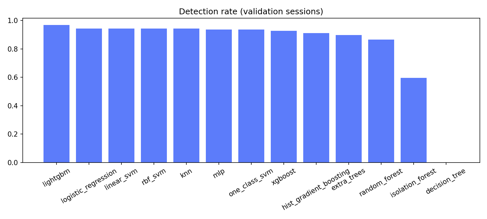
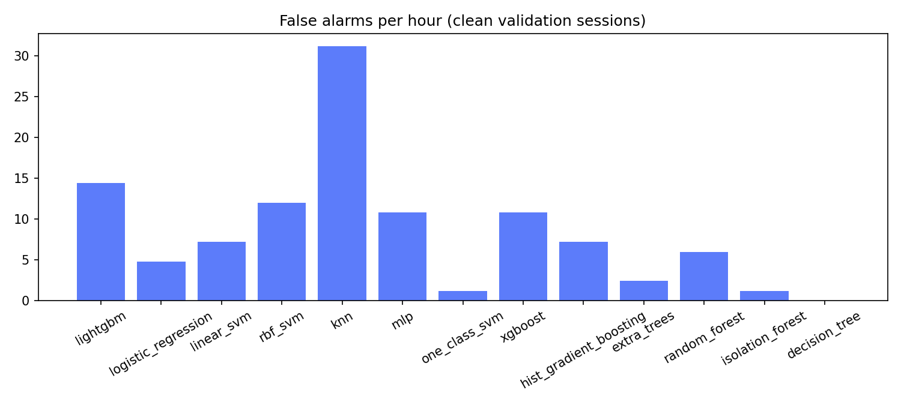
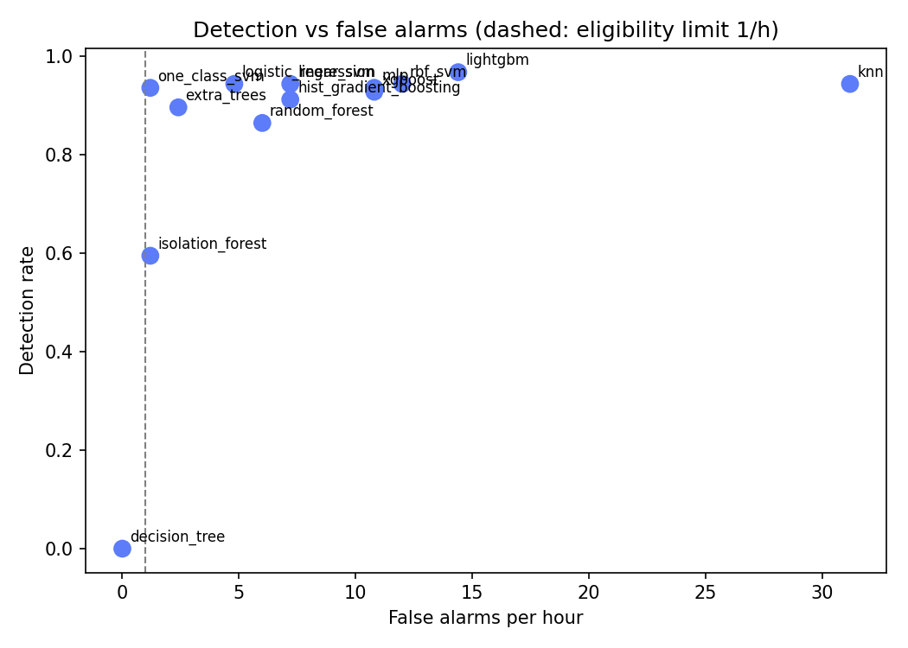

Winner by the rule in MODEL_SELECTION.md section 6: none eligible. Simulation only; not a bench or flight result.
| data | datasets/sim_dev |
| sessions_train | 310 |
| sessions_calibration | 124 |
| sessions_validation | 186 |
| threshold_percentile | 99.900 |
| persistence_k | 3 |
| Model | DR (T1) | FA/h (T2) | DR no C/N0, DOP (T3) | DR weak <1 dB (T4) | DR unseen type (T5) | Delay median s (T6) | ms/decision (T7) | DR mean, 5 seeds (T8) | DR std (T8) | FA/h mean (T8) | FA/h std (T8) | Eligible |
|---|---|---|---|---|---|---|---|---|---|---|---|---|
| lightgbm | 0.968 | 14.400 | 0.881 | 0.889 | 0.960 | 0.639 | 0.001 | 0.960 | 0.013 | 14.640 | 3.343 | no |
| logistic_regression | 0.944 | 4.800 | 0.897 | 0.778 | 0.937 | 0.755 | 0.000 | 0.944 | 0.000 | 6.240 | 1.920 | no |
| linear_svm | 0.944 | 7.200 | 0.913 | 0.778 | 0.937 | 0.755 | 0.000 | 0.944 | 0.000 | 6.000 | 1.073 | no |
| rbf_svm | 0.944 | 12.000 | 0.881 | 0.667 | 0.857 | 1.422 | 0.047 | 0.941 | 0.008 | 8.160 | 3.671 | no |
| knn | 0.944 | 31.200 | 0.000 | 0.778 | 0.135 | 0.814 | 0.239 | 0.759 | 0.379 | 25.680 | 14.392 | no |
| mlp | 0.937 | 10.800 | 0.937 | 0.778 | 0.929 | 0.918 | 0.001 | 0.938 | 0.014 | 3.360 | 3.973 | no |
| one_class_svm | 0.937 | 1.200 | 0.952 | 0.889 | 0.937 | 0.296 | 0.023 | 0.938 | 0.003 | 2.400 | 1.073 | no |
| xgboost | 0.929 | 10.800 | 0.889 | 0.667 | 0.952 | 0.832 | 0.001 | 0.937 | 0.012 | 13.200 | 3.795 | no |
| hist_gradient_boosting | 0.913 | 7.200 | 0.881 | 0.667 | 0.960 | 0.963 | 0.002 | 0.937 | 0.024 | 10.560 | 3.825 | no |
| extra_trees | 0.897 | 2.400 | 0.857 | 0.556 | 0.929 | 0.958 | 0.068 | 0.902 | 0.013 | 3.840 | 2.327 | no |
| random_forest | 0.865 | 6.000 | 0.873 | 0.444 | 0.881 | 1.875 | 0.067 | 0.884 | 0.018 | 4.560 | 1.764 | no |
| isolation_forest | 0.595 | 1.200 | 0.778 | 0.111 | 0.595 | 0.859 | 0.009 | 0.624 | 0.034 | 3.120 | 2.799 | no |
| decision_tree | 0.000 | 0.000 | 0.000 | 0.000 | 0.000 | n/a | 0.000 | 0.000 | 0.000 | 0.000 | 0.000 | no |


